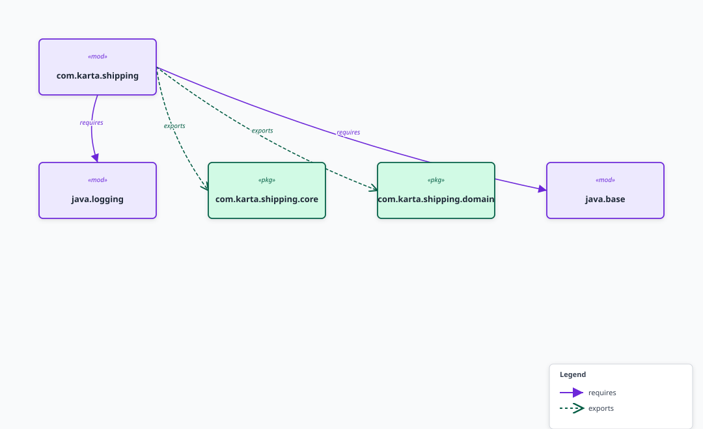
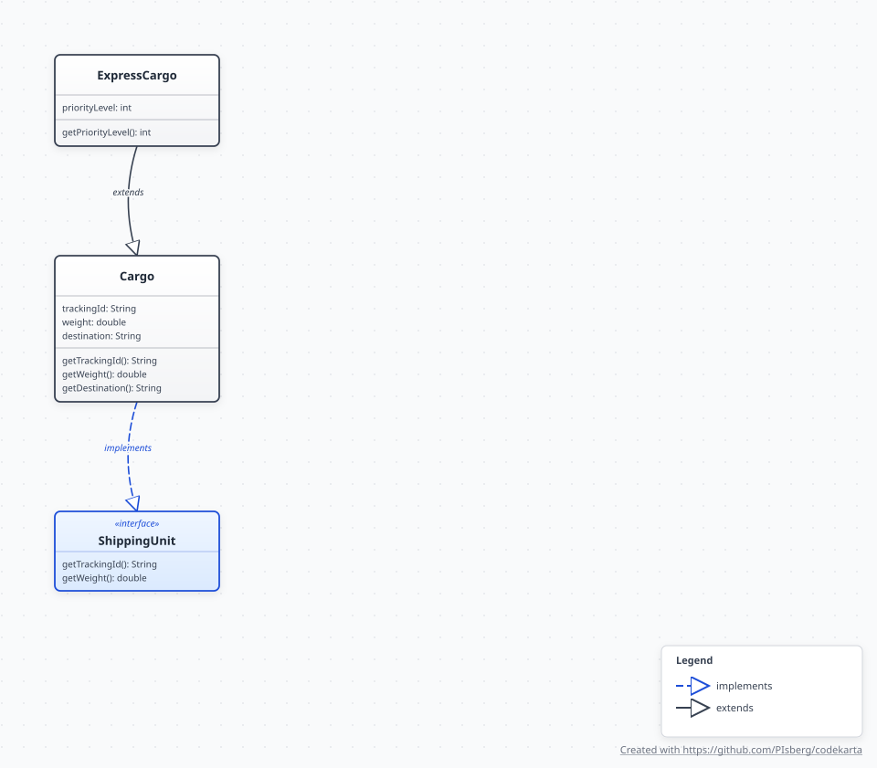
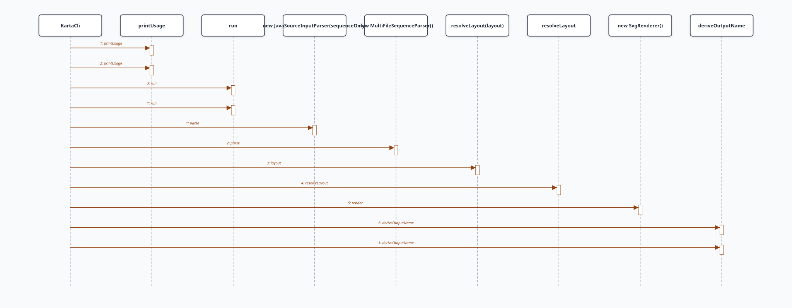
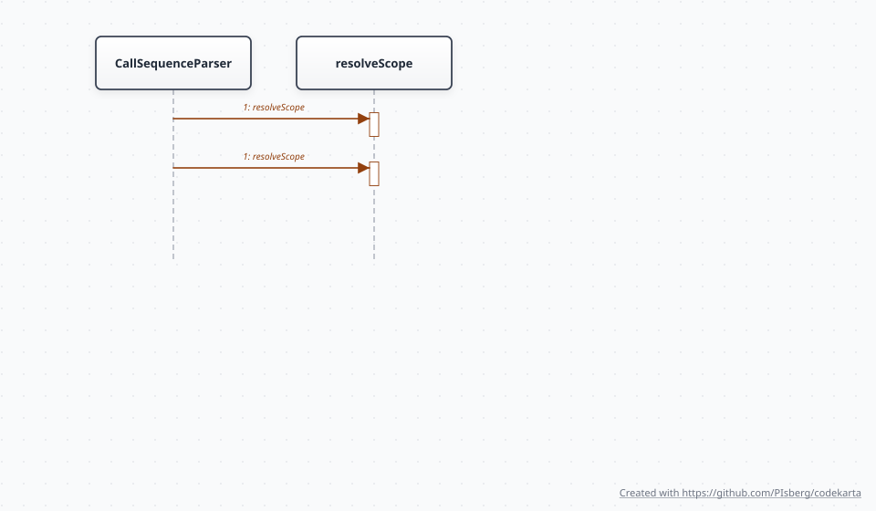
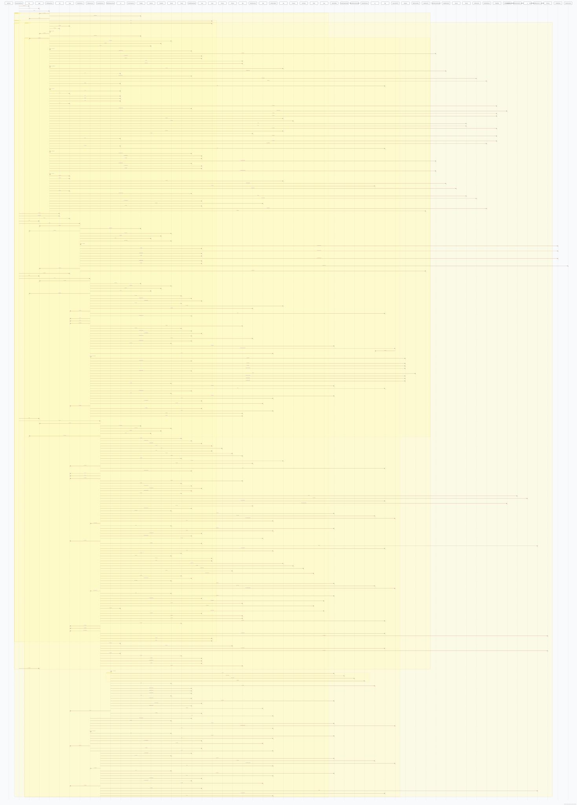
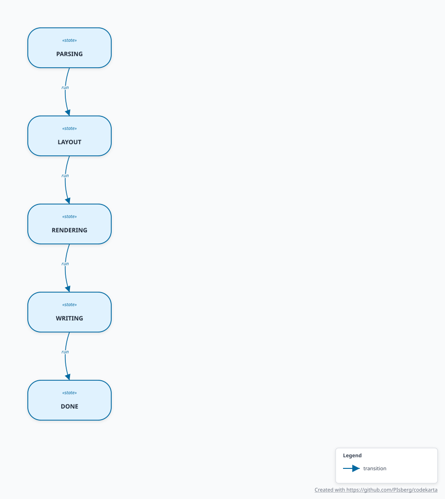

codekarta — generated diagrams
Module diagram

Class diagram

Exception-flow sequence (KartaCli)

Call-only sequence (CallSequenceParser)

Multi-file stitched sequence

State machine (KartaCli pipeline)
